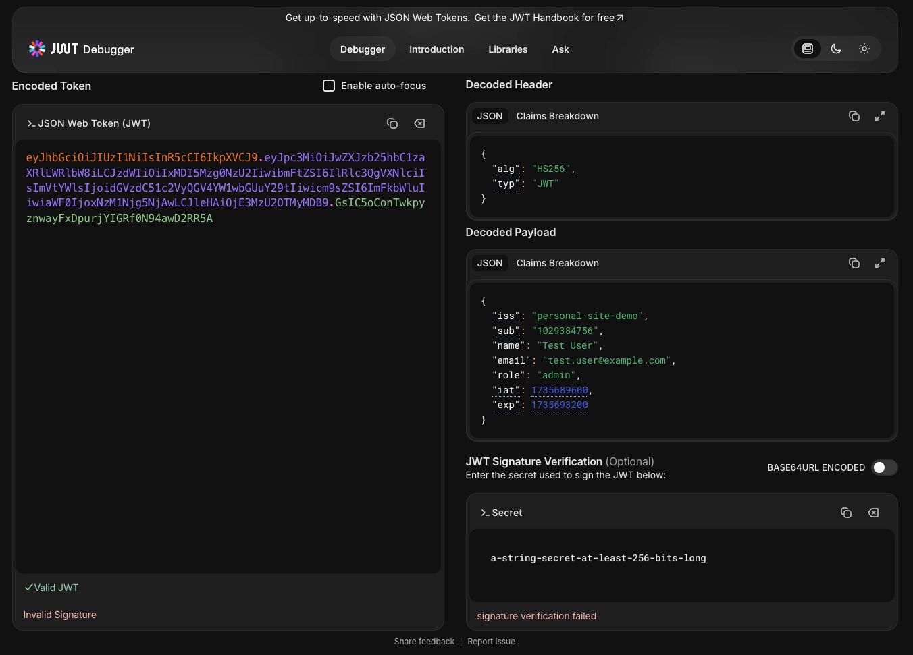
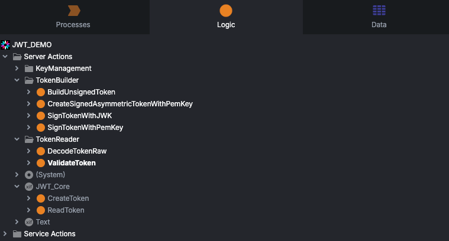

HTTP is stateless by design — every request stands alone, with no memory of what came before. So how does a web app know it's still you on the next click? This is the problem authentication tokens solve, and it's why JSON Web Tokens (JWTs) have become the default choice for modern APIs and microservices. The concepts below apply to any stack, and the practical examples are shown in OutSystems.
Authorization & the stateless web
A static site just serves pages: request a URL, get a page back, no identity involved. The moment an app needs to know who is asking — to show a dashboard, restrict an action, or fetch account data — the server needs a way to recognize the same user across multiple requests. Since HTTP itself keeps no memory between them, that identity has to travel with each request somehow.
There are two common ways to carry that identity: session tokens and JSON Web Tokens.
Session tokens vs JWTs
A session token is a small random ID. On login, the server creates a session record, stores it (in memory, a database, or a cache like Redis), and hands the client a session_id. Every subsequent request sends that ID back, and the server looks it up to retrieve who the user is.
It works well for a single server, but starts to strain once you scale horizontally. Behind a load balancer with multiple app servers, whichever server created the session needs to either share that session store with the others, or the load balancer needs to consistently route the same user to the same server — both add moving parts and a shared point of failure.
A JWT takes a different approach: instead of a pointer to server-side state, the token carries the state itself, cryptographically signed so it can't be tampered with. Any server that knows the signing secret (or public key) can verify and read it — no shared session store required.
Anatomy of a JWT
A JWT is three Base64URL-encoded segments separated by dots:
Header
Identifies the token type and the signing algorithm:
{
"alg": "HS256",
"typ": "JWT"
}Payload
Holds the claims — the actual data about the user and the token itself:
{
"iss": "my-app-auth",
"sub": "1234567890",
"name": "Jane Doe",
"email": "jane.doe@example.com",
"admin": true,
"iat": 1735689600,
"exp": 1735693200
}Signature
The header and payload are hashed together with a secret (or private key), producing a signature that proves the token wasn't altered:
HMACSHA256(
base64UrlEncode(header) + "." + base64UrlEncode(payload),
secret
)Put together, a real token looks like this:

How verification works
To validate an incoming token, the server recomputes the signature from the header and payload using its own copy of the secret (or public key), and compares it against the signature in the token. If they match, the claims are trustworthy; if not, the token was tampered with or signed by someone else.
Advantages
- Stateless — no server-side session storage needed.
- Cross-domain & cross-platform — works the same across APIs, mobile apps and SPAs.
- Role & permission data travels with the token, enabling access control without extra lookups.
- Scales horizontally — any server that holds the key can verify a token.
- Built-in expiration, via the
expclaim. - The de facto standard for securing APIs and microservices.
Disadvantages — and how to mitigate them
| Risk | Mitigation |
|---|---|
| Can't be revoked on demand — a valid token stays valid until it expires | Keep tokens short-lived; pair with a refresh-token flow |
| XSS / token theft if stored insecurely | Prefer HTTP-only cookies; enforce a Content Security Policy |
| Replay attacks — a stolen token can be reused | Rotate tokens, bind them to a device/session, and always use HTTPS |
Best practices
- Short-lived tokens. The shorter the lifetime, the smaller the exposure window if one leaks.
- Secure client-side storage. Avoid
localStoragefor anything sensitive; HTTP-only cookies are safer against XSS. - Always transmit over HTTPS. A JWT sent in the clear is trivially readable in transit.
- Validate every claim server-side — issuer, audience, expiration — and rotate signing keys periodically.
Using JWTs in OutSystems
OutSystems doesn't make you build JWT handling from scratch — there's tooling to create, sign and validate tokens in a few different ways (symmetric secrets, asymmetric keys, JSON Web Keys). The screenshot below shows a small demo module with those options grouped under TokenBuilder and TokenReader. For a typical login flow you only need two of them: one to sign a token with a JSON Web Key after login, and one to validate a token on incoming requests — that's what the two examples below walk through.

Issuing a token
A server action builds the claims and signs the token, typically right after a successful login:
ServerAction: SignTokenWithJWK
Inputs: UserId (Text), Roles (List of Text), ExpiresInMinutes (Integer)
Output: Token (Text)
1. Claims = {
"sub": UserId,
"roles": Roles,
"iat": Now(),
"exp": AddMinutes(Now(), ExpiresInMinutes)
}
2. Token = JWT_Core.SignTokenWithJWK(Claims, SigningKey)
3. Return TokenValidating a token
An action (often wired into an API's authentication flow) reads and validates the token on each protected request:
ServerAction: ValidateToken
Inputs: Token (Text)
Outputs: IsValid (Boolean), UserId (Text), Roles (List of Text)
1. Result = JWT_Core.ValidateToken(Token, SigningKey)
2. If not Result.IsValid or Result.IsExpired:
Return IsValid = False
3. UserId = Result.Claims.sub
Roles = Result.Claims.roles
4. Return IsValid = TrueFrom there, the pattern is the same as anywhere else: reject the request with a 401 if the token is invalid or expired, otherwise let it through and use the claims (like roles) to decide what the caller is allowed to do.
Closing thoughts
Session tokens and JWTs solve the same problem — carrying identity across an inherently stateless protocol — with different tradeoffs. Sessions are simple and centrally revocable but need shared state; JWTs scale effortlessly but trade away easy revocation. Most real systems end up using JWTs for short-lived access, backed by a refresh-token mechanism that gives back some of that control. Knowing both models — and where each one bends — makes it much easier to pick the right one for a given system.